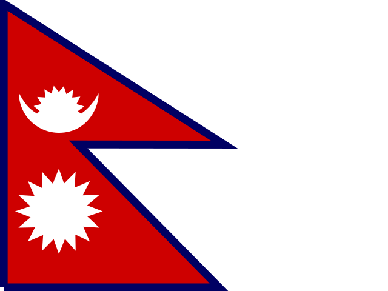
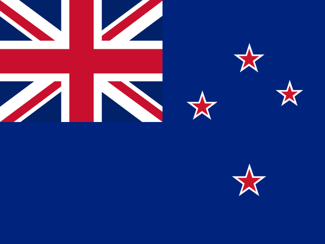
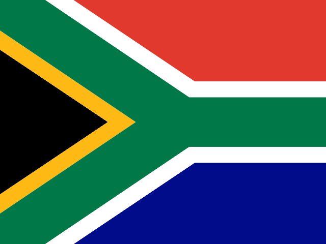

Every board has its own page
Each Member Board now has a page with its leaders, its squad and its announcements.
Welcome to the
Hand Cricket for Everyone.
IHCC brings the Hand Cricket boards of the world together under one fair constitution, with equal boards and open elections.
The International Hand Cricket Council is being formed by the Hand Cricket community, for the Hand Cricket community. It is built on one written constitution, open and fair elections, and equal boards. This website is where the council's work is shared with everyone.
Each board has its own page with its leaders, its squad and its announcements. The numbers below update by themselves.

Hand Cricket Association of NepalSquad list: loading
New Zealand Hand CricketSquad list: loading
Hand Cricket South AfricaSquad list: loadingEach Member Board now has a page with its leaders, its squad and its announcements.
All 13 Member Boards approved it, by more than two-thirds. T20 stays 12 overs and Test stays 20 overs.
The official IHCC YouTube channel is now open.
MK Tournament Hub is an Android app for managing cricket tournaments. You can install it from Google Play.
Do you run a Hand Cricket community, a tournament, a channel or a sponsorship that could work with the council? Write to us and tell us about it.